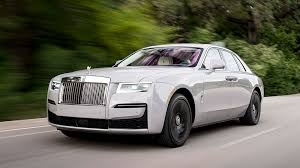
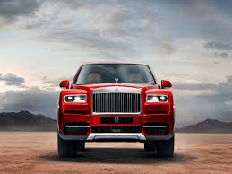

| ROLLS ROYCE | MODEL | YEARS | TYPE | POWER@RPM RATE@RPM | CO2 EMISSION (G/KM) |
|---|---|---|---|---|---|
|
Phantom | 2003–2017 | 6,749 cc (411.8 cu in) V12 (N73B68) | 460 PS (338 kW; 454 hp)@5350, 720 N⋅m (531 lb⋅ft)@3500 | 355 |
|
Phantom Extended Wheelbase | 2005–2017 | 6,749 cc (411.8 cu in) V12 (N73B68) | 100 | 355 |
|  | Drophead Coupé | 2007–2017 | 6,749 cc (411.8 cu in) V12 (N73B68) | 460 PS (338 kW; 454 hp)@5350, 720 N⋅m (531 lb⋅ft)@3500 | 355 |
|  | Coupé | 2008–2017 | 6,749 cc (411.8 cu in) V12 (N73B68) | 460 PS (338 kW; 454 hp)@5350, 720 N⋅m (531 lb⋅ft)@3500 | 355 |